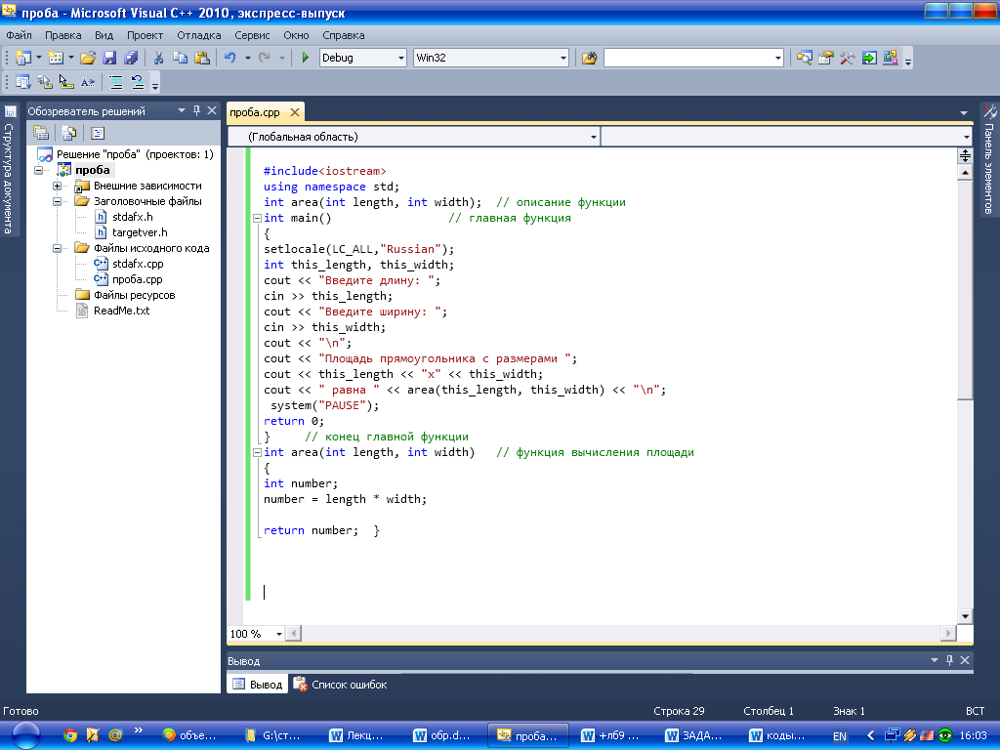
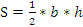
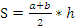
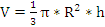
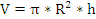

Лабораторная работа № 7
Разработка программ с применением функций.
Цель работы: Научиться разрабатывать программы с применением функций.
Материальное обеспечение: Компьютерное оборудование и программное обеспечение.
Основные понятия и определения
С помощью функции в С++ задачи могут быть разделены на более простые составляющие. Всякую задачу можно разбить на несколько подзадач. Что позволяет избежать избыточности кода, поскольку функцию записывают один раз, а вызывать ее можно сколько угодно раз. Выполнение программы начинается всегда с функции main(). Когда в программе встречается имя функции, происходит обращение к ней и управление передается ей. Иными словами происходит вызов функции. В этот момент программа начинает выполнять операторы, которые содержатся внутри функции. После выполнения функции управление передается в то место, откуда она была вызвана. Функции могут вызывать внутри себя другие функции, а также вызывать самих себя. Функции, которые вызывают самих себя, называют рекурсивными функциями. Функции могут передавать любое количество аргументов, а возвращаемый результат всегда один. Формально функция выглядит так:
тип_возвращаемого_результата
имя_функции
(список_параметров)
{
инструкции
}
Тут: тип – это возвращаемый тип (тип того, что возвращает функция), имя – это название функции и список_параметров – это параметры, которые передаются функции. В функциях для возврата результата используется инструкция return, она возвращает, какое либо значение в то место, откуда была вызвана функция. Использование ключевого слова void, означает, что функция не возвращает значения.
Методический пример:
Написать программу, которая вычисляет площадь прямоугольника заданной длины и ширины с использованием функции. (S=a*b)

Результат программы:
Введите длину: 50
Введите ширину: 60
Площадь прямоугольника с размерами 50х60 равна 300
Варианты заданий:
1.Написать
программу, которая вычисляет площадь
треугольника
с
заданным
основанием и высотой
с использованием функции.
(

 )
)
2.Написать
программу, которая вычисляет площадь
трапеции
c
заданными основаниями и высотой
с использованием функции.
(   )
)
3.Написать программу, которая вычисляет площадь параллелограмма c заданным основанием и высотой с использованием функции. (S=a*h)
4.Написать программу, которая вычисляет площадь квадрата c заданными сторонами с использованием функции. (S=a2)
5.Написать программу, которая вычисляет площадь круга c заданным радиусом с использованием функции. (S=π*R2) , где ПИ=3,14.
6.Написать
программу, которая вычисляет
объем конуса
c
заданным радиусом
и высотой
с использованием функции.
(  ) , где ПИ=3,14.
) , где ПИ=3,14.
7.Написать
программу, которая вычисляет
объем цилиндра
c
заданным радиусом и высотой
с использованием функции.
( 

8.Написать
программу, которая вычисляет
объем куба
c
заданным сторонами
с использованием функции.
(
 )
)
СРС:
Написать программу, которая возвращает минимальное число из трех заданных чисел с использованием функции.
Порядок выполения работы:
1.Изучить теоретические сведения по данной лабораторной работе.
2.Составить программу для заданного варианта.
3.Записать программу на языке Visual C++.
4.Отладить программу.
5.Продемонстрировать работу программы на ПК для заданного варианта.
Содержание отчета:
1.Тема и цель работы.
2.Вариант задания.
3.Листинг и результат программы.
4.Контрольные вопросы.
Контрольные вопросы:
1.Для чего используются функции?
2.C чего начинается выполнение программы?
3.Какие функции называются рекурсивными?
4.С чего начинает выполнение функции?
5.Опишите структуру функции.
6.Какой оператор используется для возврата функции значения?
7.Чем отличается объявление функции от определения функции?
Литература:
1.Хортон А. Visual 2010: полный курс.:Пер. с анг.-М.:ООО «И.Д.Вильямс», 2011г , 1216 с.: ил.
2.Пахомов Б.И. С/C++ и MS Visual C++ 2010 для начинающих. – СПб.:БХВ-Петербург, 2011.-736 с.:ил.
3.Зиборов В. В. MS Visual C++ 2010 в среде.NET. Библиотека программиста. — СПб.: Питер,
2012. — 320 с.: ил.
4.Прохоренок Н.А. Программирование на С++ в Visual Studio 2010 Express, - СПб.: Питер, 2011г , 71 с.: ил.
5.Степаненко О.Е. VisualC++.NET.Классикапрограммирования.:-М:Научнаякнига,К.;Бу-кипист,2010.—768с.